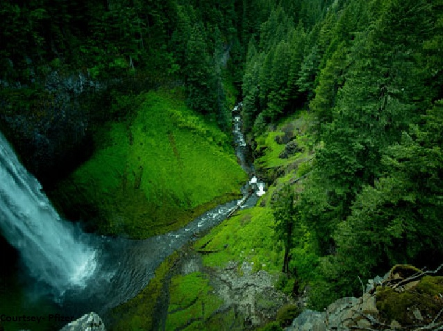

River in Magura
Nabaganga River
The river was named Nabaganga (New Ganges in Bengali) in the belief that the Ganges also derived from Mathabhanga.
The Nabaganga originates near the town of Chuadanga, in Chuadanga District. It flows east, where the Kumar and the Chitra rivers join it at Magura and Narail, respectively. From here,
the river turns southward, where it merges into the Bhairab River. This is a recent change, as it was once a tributary of the Ichamati River. Silt deposits changed the river's course.
Efforts to steer the river back to its original course proved futile when dredging in the 1930, at Gaznavi Ghat, failed to produce the desired results. Today, the Nabaganga merges into the Kumar River after flowing through Chuadanga and Jhenaidah Districts. Most of the water in the Nabaganga River from this point on comes from the Kumar.
| Length |
Width |
Depth |
River basin |
| 214 km |
2250 meters |
10 meters |
4000 square km |
Gorai-Madhumati River
The Gorai-Madhumati River (Bengali: গড়াই-মধুমতি Gôŗai-Modhumoti) is one of the longest rivers in Bangladesh and a distributary of the Ganges.
[1] In the upper reaches it is called the Gorai, and the name changes to Madhumati. Madhumati continuous stream through Kushtia, Jessore, Faridpur, Khulna, Pirojpur and Barguna districts in Bangladesh.
| Length |
Width |
Depth |
River basin |
| 321 km |
3250 meters |
16 meters |
5340 square km |
Kumār River
 This page presents the geographical name data for Kumār River in Bangladesh, as supplied by the US military intelligence in electronic format,
including the geographic coordinates and place name in various forms, latin, roman and native characters, and its location in its respective country's administrative division.
This page presents the geographical name data for Kumār River in Bangladesh, as supplied by the US military intelligence in electronic format,
including the geographic coordinates and place name in various forms, latin, roman and native characters, and its location in its respective country's administrative division.
| Length |
Width |
Depth |
River basin |
| 240 km |
2312 meters |
11 meters |
3421 square km |
THANKS FOR VISITING